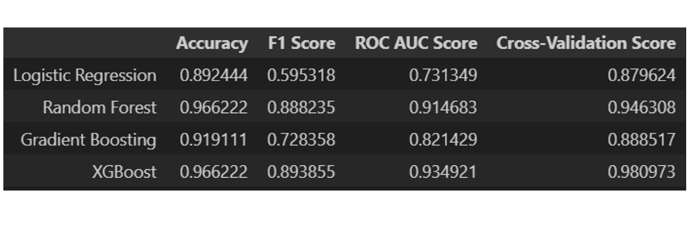

PROJECTS
Cyber Attacks
Team Members
Hamna LinkedIn
John LinkedIn
WHY IS THIS TOPIC IMPORTANT
It is important to work on cyber crimes as the cost of cyber attacks can reach $10.5 trillion annually by the year 2025. According to Statistica, average data breaches cost $4.35 million. Many issues occur due to these breaches, including financial losses, reputation damage, and legal liabilities.
DATASET
We got our dataset from Kaggle.
It had 40,000 records and 25 features.
MODEL TRAINING AND TESTING
Goal: Predict the severity level of attack
Target Feature: Severity Level
Model used: RandomForest
Model Accuracy: 34%

Lung Cancer Detection
Team Members
Hamna LinkedIn
John LinkedIn
WHY IS THIS TOPIC IMPORTANT
Lung cancer accounts for nearly 25% of all cancer-related deaths, making it the leading cause of cancer mortality worldwide. With a 5-year survival rate of only 20.5%, early and accurate identification of high-risk patients is crucial. This approach can significantly enhance survival rates through timely and targeted interventions. By prioritizing patients based on their risk, healthcare providers can manage resources more effectively and improve overall patient outcomes. (Sources: WHO, National Cancer Institute SEER Program)
DATASET
We got our dataset from Kaggle.
It had 3.25 million records and 18 features
MODEL TRAINING AND TESTING
Goal: Predict the Accuracy level of the data
Target Feature: Higher Accurate Level
Model used: RandomForest
Model Accuracy: 77.73%

Flight Price Prediction
Team Members
Hamna LinkedIn
John LinkedIn
WHY IS THIS TOPIC IMPORTANT
These decisions help airlines optimize revenue, enhance customer satisfaction, and improve efficiency. By expanding routes, diversifying services, and investing in technology, airlines can adapt to market changes and ensure sustainable growth and profitability. This topic's importance lies in guiding airlines towards resilience and long-term success in the competitive aviation industry.
DATASET
We got our dataset from kaggle. It is obtained from “Ease My Trip” website
It had a total of 300261 distinct flight booking options.
LINEAR REGRESSION
Results:
MAE: 4532.26
RMSE: 6852.74
R^2: 0.9095
This shows that linear regression model fits the data well and makes good prediction to unseen data. However, it is not too accurate.
RANDOM FOREST
Results:
MAE: 1064.16
RMSE: 2749.20
R^2: 0.9854
This result shows that the random forest is better in making prediction on unseen data and fits on the data a lot better

Loblaws Churn prediction
Team Members
Hamna LinkedIn
John LinkedIn
WHY IS THIS TOPIC IMPORTANT
This topic is crucial because no company wants to lose their loyal customers. They would make all the effort to retain these customers while also ensuring company’s profitability. By understanding the reasons of churn, companies can take actions to overcome the customer retention and improve their shopping experience.
DATASET
MODEL Selection
Models used:
Logistic Regression
Random Forest
Gradient Boosting
XGB Classifier
Model comparison and Results:
Models Random Forest and XGBoost gave the highest accuracy on the test data, which is almost 96%, with the highest cross-validation score compared to other models

TikTok prediction
Team Members
Hamna LinkedIn
John LinkedIn
WHY IS THIS TOPIC IMPORTANT
TikTok's unique platform encourages creativity and innovation in content creation, fostering a dynamic environment for new and compelling storytelling. TikTok fosters a sense of community among users from diverse backgrounds through shared interests and interactive content, strengthening the fabric of the digital community.
DATASET

Sentiment analysis
We can see that there is a strong positive sentiment and less negative sentiment for reviews.
Team Members
Hamna LinkedIn
John LinkedIn
WHY IS THIS TOPIC IMPORTANT
Improves Member Satisfaction: Optimizing class attendance and gym crowd levels ensures members have access to their preferred classes and equipment without overcrowding, leading to a more enjoyable and satisfying fitness experience.
Boosts Operational Efficiency: By making data-driven decisions to manage class bookings and gym traffic, GoodLife can maximize the use of its facilities, reduce idle times, and increase overall profitability, making the operation more efficient and cost-effectiv